Your photos, stuck to your desktop.
Sticta cuts the people out of your photos, turns them into stickers and pins them to a travel map, a fridge door or a corkboard. Then it sets the whole thing as your wallpaper.
Free to download · Sticta Unlimited is a one-time purchase · Mac with Apple silicon, macOS 14 or later
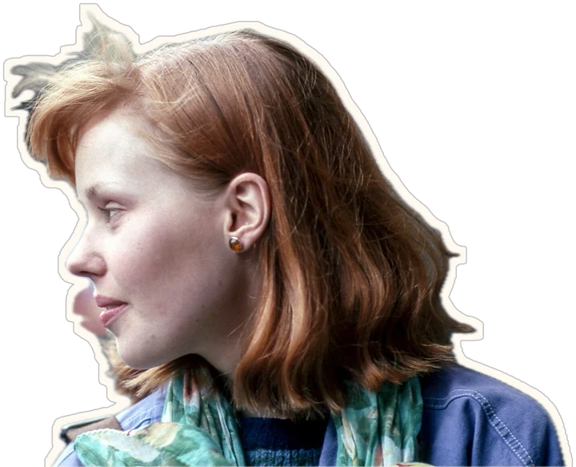
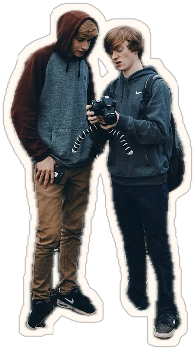
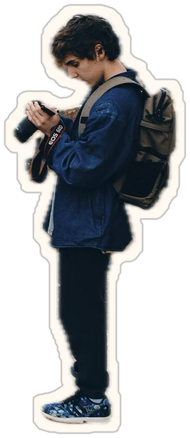
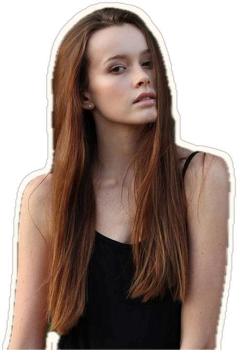
For Macs with Apple silicon · macOS 14 or later
From photos to wallpaper in 30 seconds.
Three steps, zero scissors.
-
1
Drop your photos
Drag them in from Photos or Finder. Holiday snaps with a location go straight to the right country.
-
2
Keep who matters
Sticta finds the people and cuts them out. Five friends in one shot? Pick who makes the sticker.
-
3
Set as wallpaper
One click and it's your real desktop, rendered sharp for every screen you have.
From photo to sticker in a blink.
Sticta picks out the subject in about a third of a second, right on your Mac. Flyaway hair, busy backgrounds, a crowd of four: it handles them.
And when it misses a bit, you're not stuck with it. A brush erases or brings back whole chunks, not just a pixel at the edge.
- Choose one person or the whole group
- Brush to erase or restore
- Nothing is uploaded, ever
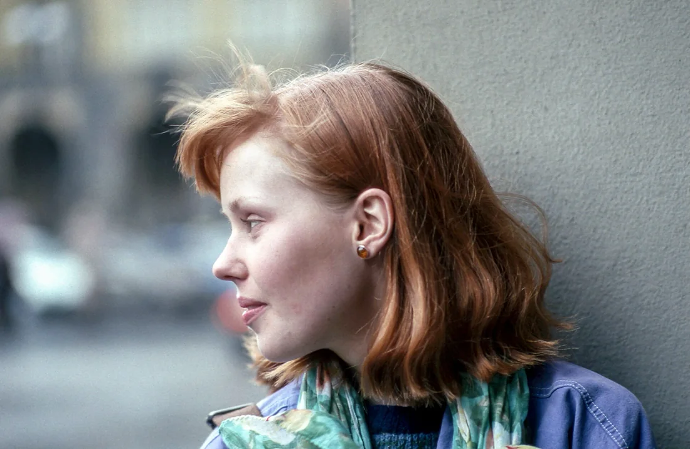
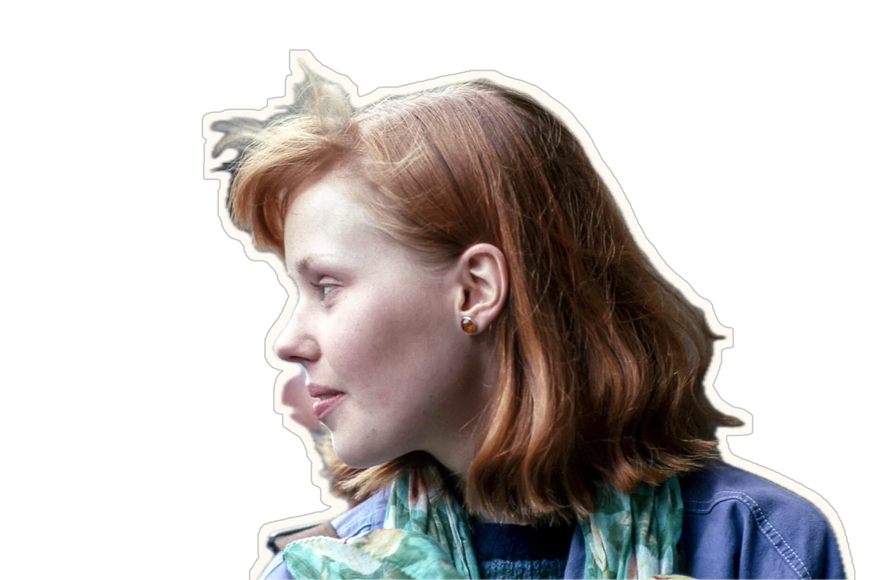
Make it look stuck on.
A thick white edge, a soft shadow, a polaroid frame. The outline isn't only for looks: it hides the ragged edges any cutout leaves behind.
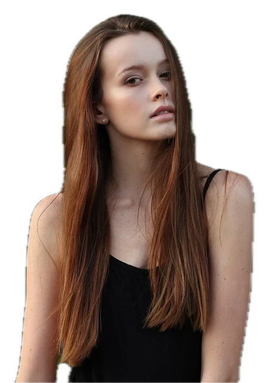
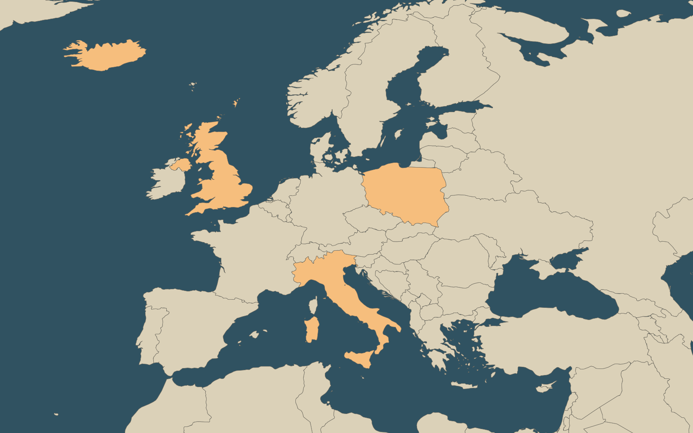
Every sticker lands where it happened.
Sticta reads the location saved in your photos and pins each sticker to its country. The countries you've been to light up, and the counter keeps score.
Every sticker lands when it happened.
Sticta reads the date saved in your photos and drops each sticker into its month, week or season. A year in photos, a wall calendar, a film strip, a clothesline with pegs, a trip day by day.
Eleven layouts and eight backgrounds, from calendar paper to kraft and chalkboard, with your own colours, fonts and frames. Free, like every scene.
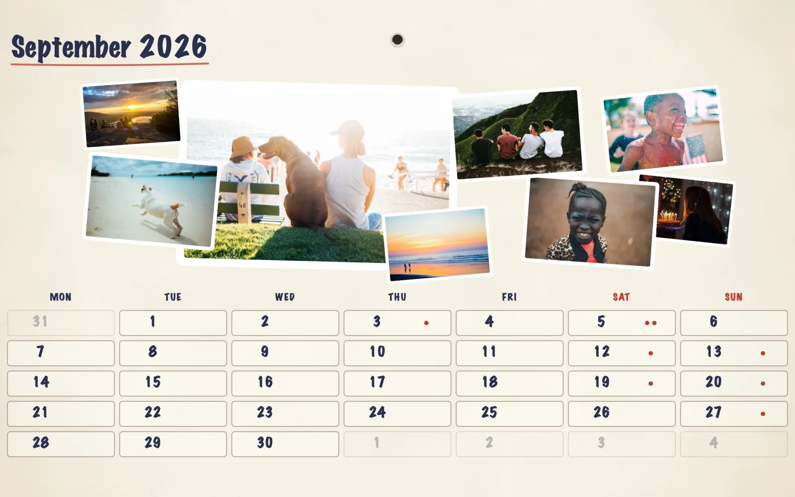
Pick a wall to stick them on.
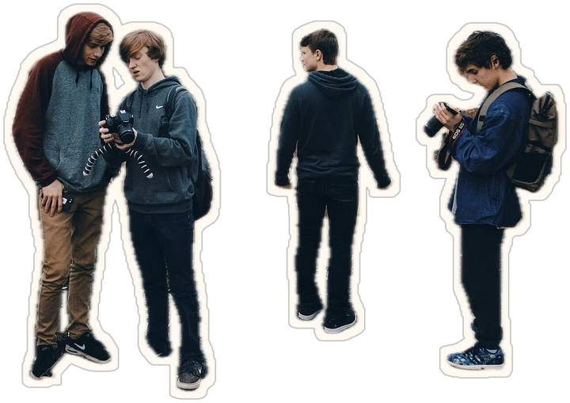
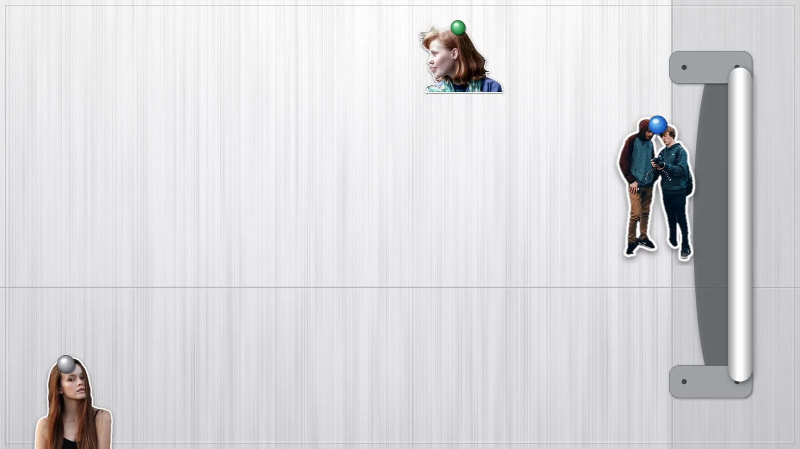
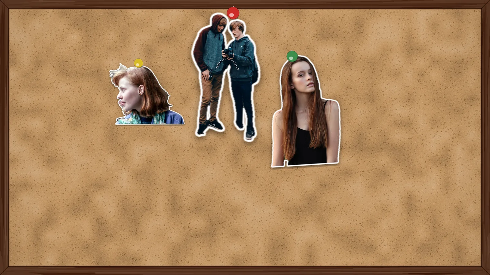
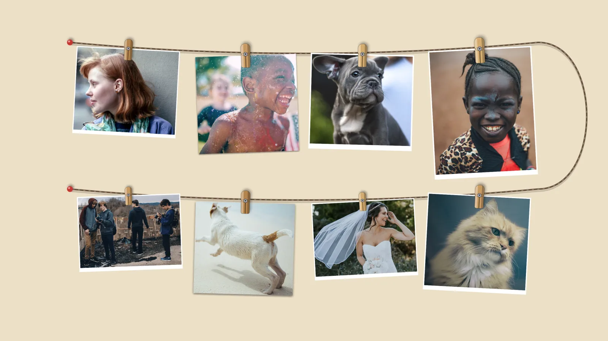
Hang your stickers on a clothesline on any wall: one to four rows, jute, baker's twine, fairy lights or wire, held by wooden, plastic or heart pegs, or a binder clip. Give one photo its own peg in a different color.
More walls are on the way, seasonal ones included. Which ones? That's still under wraps.
A different story on every screen.
Give each display its own project. Sticta remembers which is which, even after you unplug and plug back in.
Can't pick a favourite? Add a few projects to a screen and Sticta rotates them every hour, every day, every week or each time your Mac wakes up.
Off the Mac, onto the TV and the wall.
Export any project as a picture sized for a 4K or Full HD TV. Add it to a "Sticta" album in Photos, and your Apple TV can show it as a screen saver.
Or print it: 10 × 15 cm up to A3, at 300 DPI.
Your photos never leave your Mac.
Sticta doesn't connect to the internet. It only sees the photos you hand it, through the system picker or a drag and drop. No account, no cloud, no analytics.
Read the privacy policy →- 0servers
- 0accounts
- 0trackers
- 0bytes uploaded
Free to stick. Pay once for more.
One great wallpaper
- Every scene, the travel map too
- One project, five stickers
- Cutout, brush, outline and polaroid
- No watermark, no time limit
Download and start sticking.
Keep every memory
- Unlimited stickers
- Unlimited projects
- A different project on every display
- Wallpaper rotation
One-time purchase · no subscription · Family Sharing
Good to know.
+How do I make a wallpaper from my own photos on a Mac?
Drag your photos into Sticta. It cuts out the people, turns them into stickers and lays them on a scene: a travel map, a timeline sorted by date, a fridge door, a corkboard or a background of your own. Arrange them, then click Set as Wallpaper and it becomes your desktop, rendered sharp for every display.
+How do I cut a person out of a photo on a Mac?
For a single cutout, Control-click the person in Photos and choose Copy Subject, or use Tools → Remove Background in Preview. Sticta does the same on your Mac, lets you pick who stays in a group photo and fix the edges with a brush, then turns the cutout into a sticker. Three ways, compared →
+Can I put my travel photos on a map?
Yes. On Sticta's travel map, each sticker is pinned to the country where its photo was taken, using the location saved in the photo, and the countries you've visited light up. Show the whole world, a continent or one country. Step by step →
+Is Sticta free?
Sticta is free to download, with every scene, one project and five stickers, no watermark and no time limit. Sticta Unlimited is a one-time purchase that removes the limits and adds a project per display and wallpaper rotation. No subscription, and Family Sharing is on.
+Which Macs does Sticta run on?
Macs with Apple silicon (M1 or later) running macOS 14 Sonoma or later. It is available on the Mac App Store.
+Does Sticta upload my photos?
No. Sticta never connects to the internet: the cutout, the map and the wallpaper are all made on your Mac. No account, no analytics. Privacy policy →
+Can I export a wallpaper as an image or print it?
Yes. Export saves any project as a PNG for a 4K or 1080p TV or in print sizes from 10 × 15 cm to A3 at 300 DPI, or adds it to a Photos album you can use as your Apple TV screen saver. Apple TV setup →
+Can each display show a different wallpaper?
Yes, with Sticta Unlimited. Give every display its own project at its full resolution, and Sticta remembers which is which. Add a few projects to one screen and it rotates them hourly, daily, weekly or each time your Mac wakes.
More answers on the support page.
Hear what's new.
Sticta is out now on the Mac App Store. Thank you to everyone who tested the beta: the 10 giveaway winners hear from us within 14 days. Leave your email for the occasional bit of Sticta news, like new scenes and offers. No more than that.